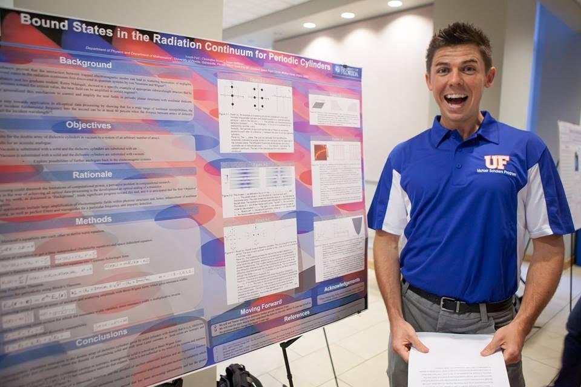

Tutoring
Mathematics, physics, and the mathematics behind machine learning.
I have been tutoring since 1997. Most of the students who find me are working through a proof-based course for the first time, or hitting the linear algebra and probability underneath a machine learning class and realizing the course skipped it.

Who you would be working with
- DegreesB.S. Mathematics and B.A. Physics, both with honors, University of Florida.
- NowCombined M.S. and Doctor of Engineering in Artificial Intelligence at Johns Hopkins University.
- ResearchCaltech, NASA Goddard, UNC Chapel Hill, and the University of Florida. First author on published NASA forecasting work.
- GRE169 of 170 quantitative, 163 of 170 verbal.
- AlsoFourth place, University of Florida Integration Bee. Vice President of the Math Club.
What I tutor
Core university mathematics
Calculus 1 through 3, multivariable calculus, differential equations, linear algebra, real analysis (including Rudin), abstract algebra, complex analysis, number theory, discrete mathematics, sets and logic, symbolic logic.
Probability and statistics
Probability, stochastic processes, mathematical statistics, applied statistics in R, time series analysis and forecasting.
Physics
Mechanics, electromagnetism, quantum mechanics, statistical and thermal physics, modern physics, mathematical methods for physicists, and graduate quantum field theory and general relativity.
Machine learning and data science
The linear algebra, probability, and optimization a machine learning course assumes you already have. Machine learning theory and practice in Python and R. Quantum machine learning. Nonlinear dynamics and chaos.
Computer science
Data structures and algorithms, Python, R, MATLAB, Mathematica, and functional programming in Haskell, Lisp, or Scala.
Test preparation
GRE, SAT and ACT, AP, GRE and SAT subject tests in mathematics and physics, GMAT, LSAT, MCAT, SSAT, PSAT, CSET, CBEST.
Competitions
AMC, AMATYC, and Putnam preparation.
Further out
If your interests run past the standard curriculum, I also work in category theory and applied category theory, topological data analysis, quantum computing and topological quantum computing, noncommutative geometry, loop quantum gravity, and string theory. Graduate students and unusually motivated undergraduates find this useful. Most students never need it, and that is fine.
How I teach
I start by finding out what you actually understand, which is usually further along than you think and in a different place than the grade suggests. Then we work forward from there. I would rather spend twenty minutes on the one definition that is quietly wrong than an hour re-deriving things you already have.
For proof-based courses in particular, most of the difficulty is not the mathematics. It is that nobody ever told you what a proof is supposed to look like from the inside, or how to tell the difference between being stuck and being finished. That is teachable, and it is most of what I do.
I have taught in a lot of shapes: one on one for almost thirty years, SAT and ACT lecturing, a mathematics learning center where I trained and supervised the staff, and a college computer lab. I have also coached high school wrestling, which turns out to be the same job.